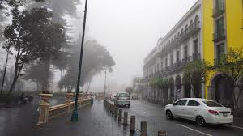

Si bien, algo que hago en mi día a día por simple gusto es caminar, disfruto demasiado caminar con un buen clima y mis audífonos no importa mucho la distancia, suelo caminar a casa saliendo de la escuela, ir a parques y centros culturales por el hecho de caminar
Caminar es una actividad física simple pero efectiva que promueve la salud cardiovascular, mejora la circulación y reduce el estrés. Además, es una excelente manera de disfrutar del aire libre, conectarse con el entorno y mantener un estilo de vida activo sin necesidad de equipos o instalaciones especiales.
Xalapa ofrece múltiples lugares ideales para caminar. El Parque de Los Tecajetes es uno de los favoritos, con senderos rodeados de naturaleza y zonas de descanso. El Bosque de Niebla también es perfecto para quienes buscan un entorno tranquilo y verde. Además, el malecón del río o las zonas del centro histórico permiten disfrutar de un paseo urbano rodeado de arquitectura.
El clima de Xalapa, generalmente fresco y templado, hace que caminar sea agradable durante todo el año. Sin embargo, los mejores momentos suelen ser temprano en la mañana o al atardecer, cuando las temperaturas son más frescas y la ciudad está más tranquila. En días soleados, las primeras horas de la mañana son ideales para evitar el calor, mientras que al final del día se puede caminar con mas tranquilidad.
